LZ Pool LaunchZone 生态系统自豪地宣布推出我们的 LZ 池，这是在多链上投资 dApp 的最复杂的加密货币之一。 用户可以质押他们的代币和/或为 LZ Swap 提供流动性以赚取新的代币。每
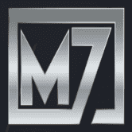 M7 Capital Investment Platform M7 Capital 投资平台是下一代收益优化器，旨在弥合 DeFi 空间与我们称之为家园的这个空间中更具冒险精神的居民之间的差距。 通过为传统的 DeFi 收益农场和下一代奖励代
Macaron Swap MacaronSwap 是一个农场和去中心化的跨链交易平台。 MacaronSwap 使用基于币安智能链的自动做市商（AMM）模型。 AMM 意味着虽然您可以在平台上交易数字资产，但没有订单簿可
MacaronSwap MacaronSwap 是一个农场和去中心化的跨链交易平台。 MacaronSwap 使用基于币安智能链的自动做市商（AMM）模型。 AMM 意味着虽然您可以在平台上交易数字资产，但没有订单簿可
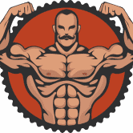 MachoSwap 自动流动性添加 (MACHO-BNB) 自动减排 反鲸 Machoswap 是基于币安智能链的自动流动性获取收益农场和 AMM 去中心化交易所，具有多种创新功能，可让您在今年夏天赚取和增加您的
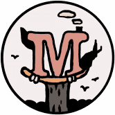 MAD Bucks Mad Bucks 是一种长期实用型代币，它将构成 Mad Meerkat NFT 生态系统的基础。 $MAD 代币现在将成为 MMA 世界的治理代币 跨链始终是愿景。将 MM 成长为品牌的梦想，无论您身在何处
Magic Land Finance Magicland 是一个新兴的可持续去中心化一站式 DeFI 门户，从基于 Arbitrium 和 IoTeX 的单产农业开始 我们的重点是为支持 Magicland 的公民提供安全的单产农业体验，使其成为 Arbitrum 和 IoTeX 上最神奇
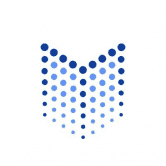 Magus Nodes 我们是 Cronos 上的下一个大型 DaaS 协议，您将有机会获得终身被动收入。 我们的团队由加密领域的资深人士组成，他们齐心协力将 Node 社区打造为年度最大、最可持续的
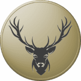 Deer Finance 鹿金融 BSC 上的第三代通货紧缩收益农场和算法稳定币协议和 AMM，具有链上推荐计划，来自 fullsail 金融。 自动减排（3% / 8 小时） 混合销毁机制 回购销毁 Transfer Tax B
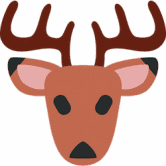 Deerfi Deerfi 提供了一个新的 DEFI 乐高积木来支持 LP 代币持有者，用户现在可以在其中存入 Uniswap 流动性提供者 (LP) 代币作为 Deerfi 贷款的抵押品。例如，用户可以将 USDC-USDT Uniswap LP 代币存入 D
Defi Empire games Defi Empire 是币安智能链上的一个生态系统，每个人都可以在一个安全、值得信赖的环境中享受最流行和最有利可图的 Defi 项目/游戏，并提供透明的无地毯合约。 我们
DeFi Halal 得益于部署在 Polygon 上的 DeFi 清真协议，现在可以无需任何利息即可获得符合清真和伊斯兰教法的贷款。它基于 Liquity 开源的经过实战测试和审计的合约。所有合约代码都
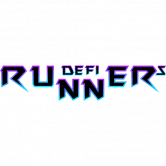 DeFi Runners DeFi Runners 是一个为加密资产用户提供各种服务的金融项目。 DeFi Runners 的想法是将所有现有的金融工具转移到一个平台中，为交易者和投资者提供复杂的解决方案。该平台
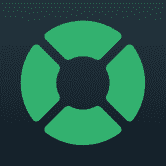 DeFi Saver DeFi Saver 是一款用于去中心化金融协议的高级管理应用程序，专注于创建、管理和跟踪杠杆头寸，具有独特的自动化资产管理和清算保护功能。 DeFi Saver 提供广泛的功能
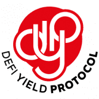 DeFi Yield Protocol DeFi Yield Protocol (DYP) 是一个独特的平台，它为收益耕种、质押、NFT 提供解决方案，并使用户能够利用 DYP 的高级交易工具。是什么让 DYP 成为独特的单产农业聚合器？ DYP 成
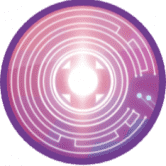 DeFi Zone - ZONE ONE DeFi ZONE Finance 是托管在 FTM 网络上的多区域收益农场。平台的每个区域通过高利息池和农场来复合对立区域代币中代币的效用。 这与质押奖励金库和强大的营销议程相结
DeFi Zone - ZONE TWO DeFi ZONE Finance 是托管在 FTM 网络上的多区域收益农场。平台的每个区域通过高利息池和农场来复合对立区域代币中代币的效用。 这与质押奖励金库和强大的营销议程相结
DeFireX 我们的 DeFi 平台允许来自世界各地的用户使用 DeFi 中的最佳机制通过 Yield Farming 获得透明且可靠的利润。 DeFireX 平台直接与 Venus、Compound、PancakeS
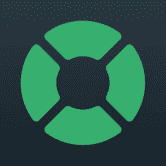 DefiSaver DeFi Saver 是去中心化金融的一站式管理解决方案，具有先进的杠杆管理工具和独特的自动化管理功能。 DeFi Saver 最初于 2019 年 4 月作为 CDP Saver 推出，此后逐渐扩大对其他协议
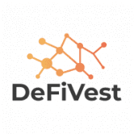 DeFiVest DeFiVest 是一种非托管去中心化金融流动性协议，是 dVest 生态系统不可或缺的一部分。 dVest 代币为 dVest 生态系统提供动力，并通过 dVest 交易所收入、流动性挖矿、质押等为代币
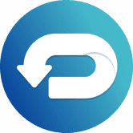 DeFizer Defizer.io 是什么？收益聚合器和优化器 Defizer.io 是内置于币安智能链的收益聚合器和优化器。在 defizer.io，用户可以在 DeFi 生态系统中找到最佳机会，提供世界一
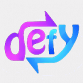 DefySwap Finance DefySwap 是一种自动做市商 (AM)，它包括交换/交易、流动性池、收益农业和池并基于 Fantom Opera 链。除了 DEX 的传统功能外，DefySwap 还包括 1000 万代币的固定供
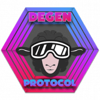 Degen Protocol DegenProtocol 是一个社区项目。加入我们！我们是您所有 DEFI 和被动收入的一站式商店。 有几种不同的方法可以在 2021 年增加你的加密货币持有量。你可以购买、交易、质押，
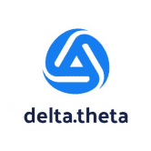 delta.theta delta.theta 是一个点对点期权交易平台，目前在币安智能链、Polygon 和以太坊上运行。简而言之，它是一种使 CEX 的期权流动性在链上可用的协议。 delta.theta 使实时订单
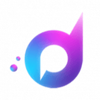 Demodyfi 该协议利用 Moonbeam 的平行链智能合约互操作性，而 Substrate 框架作为基础层。结合这一点，它可以在 Polkadot 上构建，进一步使其与 EVM 兼容，并使用以太坊堆栈中可用的工具部署
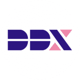 DerivaDEX | Insurance Fund DerivaDEX 是下一代加密货币衍生品。通过引导保险基金开始赚取 DDX。 DerivaDEX是一种新型的交易协议，具有关键的性能优势，包括实时报价，快速的交
Desire DESIRE 是 Sandman Finance 的第 5 层，是具有 Anti-Bot 系统的收益农业，具有自动复合的 Vaults 和具有 Max-Supply、NFT 农业、NFT 战斗和赌博的多层 如果你正在寻找一个安
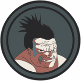 Despair 第一个 Polygon 社区拥有的 AMM。 要到达那里，您需要冒险进入 Sandman Universe 及其 7 个王国。 绝望农场，单产农业，自动复合保险库和具有最大供应的多层，NFT 农业，N
Destiny Destiny 是 Sandman Finance 的第 6 层，是具有 Anti-Bot 系统的收益农业、具有自动复合的保险库和具有 Max-Supply、NFT 农业、NFT 战斗和赌博的多层 如果你正在寻找一
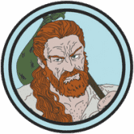 Destruction Destruction Farm 是第一个带有 Anti-Bot System、Vaults with auto-compounding 和 Multi-Layer with Max-Supply、NFT Farming、NFT Battles 和 Gambling 如果你正在寻找一个安全可靠的 Yield
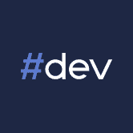 dev DeFi #dev DeFi 旨在帮助用户以低借贷利率借入 BSC 资产并为其抵押品收取利息。 #dev DeFi 在币安智能链上完全去中心化和开源。去中心化治理将很快发生，其中 DEV 代币将在治理
Devil Finance 什么是恶魔金融？ 本质上，Devil Finance 是一个去中心化收益优化器平台，允许其用户从他们的加密资产中赚取复利。 Devil Finance 在 Fantom 区块链上运行，并提供领先的市